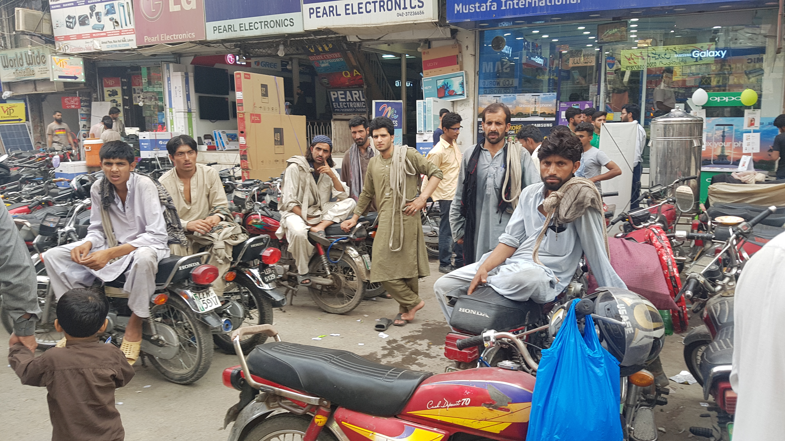
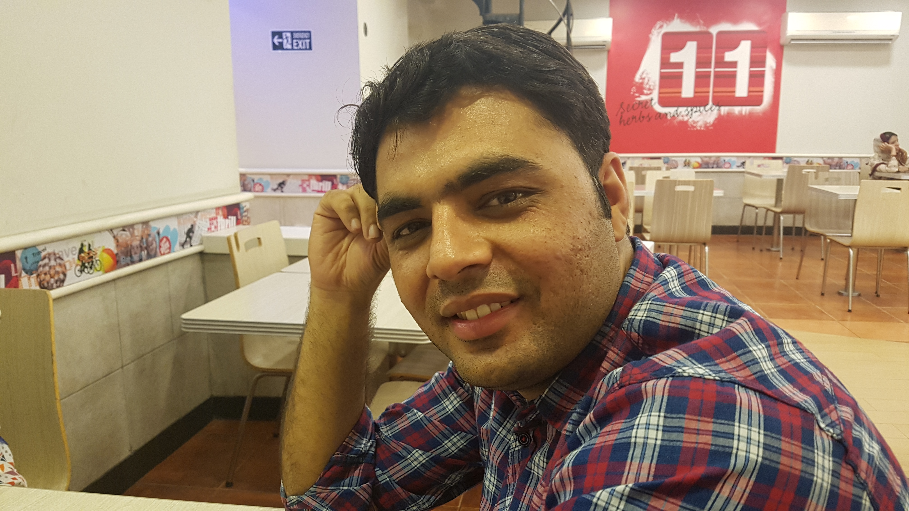

첫날 부터 파키스탄 사람들에게 받은 환대
아침 늦게 넉넉히 일어나서 짐을 모두 싸놓고 식사를 했다. 300루피로 릭샤를 흥정하려 했으나 어렵게 350 루피로 흥정 완료했다. 릭샤를 타고 약 1시간에 걸쳐 어제 왔었던 인도파키스탄 국경에 도착했다. 마지막 인도라고 생각하니 아쉬웠다. 18일동안 인도여행. 정말 좋은 기억만 남기고 간다. 특히 생각보다 친절하고 좋았던 사람들. 엄청 맛있었던 음식들. 다양한 볼거리와 문화.
인도 국경 사무소에 도착했다. 확실히 인도사람들과 파키스탄간에 왕래는 없는것 같다. 파키스탄으로 입국하는 사람이 없었다. 무척 한산했다. 한 가족이 있어서 파키스탄에는 무슨일로 들어가는지 물었더니, 아빠가 파키스탄 대사관이라서 들어간다고 한다. 그만큼 인도인이 파키스탄에 여행으로 입국하는 일은 흔하지 않은 일인가보다.
파키스탄 국경을 통과하는데 기분이 특이하고 좋았다. 만났던 여행자들에게 다음 여행지가 파키스탄이라고 말하면 그들은 항상 놀라고 갈수 있겠냐고 되물었기 때문이다. 걱정했던 파키스탄 국경 통과 생각보다 쉬웠음. 그냥 암리차르에서 국경사무실에 도착하고 그냥 여권만 보여주고 통과했다. 생각보다 쉬워서 우리도 놀랐다.

파키스탄에 당당하게 입국하는 나
파키스탄 입국도 수월하게 마쳤다. 웃으면서 인사하면 그들도 웃으며 화답한다. 또다시 릭샤를 타고 도착한 파키스탄 라호르. 첫인상은 엄청나게 덥고 도로의 엄청난 먼지가 많다는거였다. 인도와 크게 다르게 느껴지지 않았다. 라호르에는 여행자가 묶을수 있는 게스트하우스가 두개가 있다고 한다. 그중 하나에 어렵지 않게 도착할 수 있었다.
찜통에 어두컴컴한 숙소에 짐을 푼뒤 우리는 밖으로 나왔다. 곧 환전을 한 뒤, 길거리 아무식당에 들어갔다. 거기서 shuwarma라는 스트리트 푸드를 먹었는데 진짜 맛있었다. 가격도 100루피로 엄청나게 쌌다.(1200원) 심지어 식당에 에어컨이 나와서 최고였다. 지금까지 모든게 순조로웠다. 입국도 환전도 식사도. 그뒤 도로를 산책했다. 쇼핑몰도 구경하고 시장에서 사람들 구경했다. 수많은 인파가 쳐다보는데, 당황스러웠다. 동양인을 처음 본걸까? 그래도 인도에서 이런것을 많이 당해봤기 때문에 가까이 있는 사람들에게 인사를 했다. 생각보다 그들은 친절했다.

시장에는 전자 매장들이 줄서 있었다. 우리나라 청계천이랑 거의 유사한 모습이라 신기했다. 깊이 들어갈수록 사람들이 많이 쳐다봐서 불편했다. 수박 가게앞에 서서 이것저것 물어보는데 사람들이 몰려든다. 그리고 한 꼬마가 10초에 한번씩 내 오른쪽 팔툭을 툭툭치며 돈달라고 한다. 게속 쫒아다니는데 괴로웠다.
근처에 아이스크림 가게가 유명하다고 하길래 아이스크림도 먹고 우리는 마지막 일정으로 KFC에 가서 에어컨 바람을 쐬며 쉬기로 했다. 생각보다. 가격이 바싸서 (물론 한국에 비하면 싸지만 이곳에 오면 현지 가격에 적응이 되어 버린다.) 음료수만 마시기로 했다. 줄을 서서 기다리다가 앞에 서있던 청년들과 인사를 하고 또 대화를 하게 되었다. 그들이 본인들 자리에 와서 같이 식사를 하지 않겠느냐고 한다. 그래서 흔쾌히 좋다고 했다. 그렇게 우리는 즐겁게 대화했고 이런저런 정보도 얻었다. 파키스탄 사람들은 정말 친절하고 우리에게 잘 해줬다. 인도에서 경험해보지 못했던 환대였다.
에몬과 알리.
자기들이 산거 다 먹어도 좋다고 해서 나는 첨에 괜찬다고 했는데 결국 버거랑 치킨을 같이 먹게 되었다. 먹고 싶은거 있으면 또 시켜먹으라고 한다. 이런 환대.. 감동스럽다. 이들은 아까 다녀왔던 그 시장에서 휴대폰을 판매 한다고 한다. 시간만 많으면 더 구경을 시켜주고 싶지만 아쉽다고 한다. 1~2시간을 함께 시간을 보낸뒤 그들은 다시 일을 하러 떠났다.
그렇게 이제 일기도 좀 쓰고 쉬려고 하는데 갑자기 누가 한국말로 인사를 한다?! 신기하게도 한국인이 아니라 파키스탄인이었다. 한국 강원대학교 에서 박사과정을 마쳤기 때문에 한국말을 잘 한다고 한다. 지금은 이슬라마바드에서 대학 교수라고 한다. (나이는 29살 ㄷㄷ)
대화가 더 잘되기도 해서 우리는 정말 신나게 대화했다. 그리고 이 친구가 내일 이슬라마바드행 버스티켓을 예매해주기도 했다. 너무나도 친절한 파키스탄 사람들. 우리는 파키스탄이 진짜 좋아지기 시작했다. 파키스탄에서의 첫날이 너무 만족스러웠다.
여행자가 별로 없는 도시 사람들은 모두 친절을 베푸는걸까. 그럴지도 모르겠다. 모든 인간은 손님에게 관대하지 않을까. 밤이 늦어 우리는 숙소로 돌아왔다. 깜깜한 밤이었지만 이 사람들에대한 믿음이 생겼다. 별로 무섭지도 않았다. 지나가다가 사람들에게 인사하면 모두 화답한다.
여행을 멋지게 만드는것은 멋진 풍경이나 장소만 해당되는게 아니다. 사람들의 친절을 경험 하는것이야말로 여행을 정말 즐겁게 만들고, 장소에 대한 특별한 기억을 만드는것 같다. 파키스탄은 내게 정말 특별한 여행지가 될것 같다.

숙소에서 문제가 생겼다. 물이 안나오는 것이다. 이렇게 더운데 샤워를 못한다고?! 멘붕이었다. 어쩔수 없이 우리는 생수를 사서 물로만 샤워하기로 했다. 생수로 샤워를 하는데 사실 또 자유로움이 느껴졌다. 나만의 텐트를 가지고 살다가 샤워를 하고 싶으면 이렇게 생수 한병만 있으면 되지 않나.텐트 가지고 생수로 샤워하고 이렇게 살아도되겠다는 생각이 들었다.
샤워를 하기위해 물을 사러 나갔을때 만났던 길거리 음식이 또 맛있어보여서 사먹었다. 이번에도 슈와마였다. 이번엔 튀긴 치킨이 들어있었는데 아까보다 더 맛있었다. 가격도 90루피(약 1000원) 사람도 친절하고 음식도 맛있고. 파키스탄은.. 최고다. 파키스탄이 위험하다고 하는데 솔직히 전혀 모르겠다.
그날 밤. 찜통갔았던 더위속에서의 잠. 진짜 더웠다. 바라나시보다 힘들었다. 샤워를 제대로 못해서 그런것 같다. S가 새벽에 깨워서 쥐가 돌아다닌다고 한다. 멘붕이다. 쥐까지 돌아다닌다니! 우리는 임시로 가방을 좀 더 높은 위치에 올리고 다시 잤다. 나는 그나마 잘 잤지만 S는 쥐소리 때문에 한숨도 못잤다고 한다.